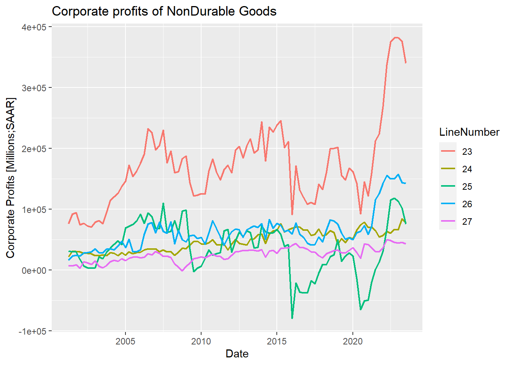

Within the BEA data, we have access to 13 differnet datasets. Corporate profits is associated with the GDP releases. They are released with the second release of GDP, as an initial esimtate at a SAAR.
knitr::kable(Possible_Datasets)| DatasetName | DatasetDescription |
|---|---|
| NIPA | Standard NIPA tables |
| NIUnderlyingDetail | Standard NI underlying detail tables |
| MNE | Multinational Enterprises |
| FixedAssets | Standard Fixed Assets tables |
| ITA | International Transactions Accounts |
| IIP | International Investment Position |
| InputOutput | Input-Output Data |
| IntlServTrade | International Services Trade |
| IntlServSTA | International Services Supplied Through Affiliates |
| GDPbyIndustry | GDP by Industry |
| Regional | Regional data sets |
| UnderlyingGDPbyIndustry | Underlying GDP by Industry |
| APIDatasetMetaData | Metadata about other API datasets |
Since we are downloaded in the NIPA dataset, we also need to know what the required parameters are for this data set. The table below tells us what the API will expect when we request the data.
knitr::kable(NIPA_Param[,c(1,3)])| ParameterName | ParameterDescription |
|---|---|
| Frequency | A - Annual, Q-Quarterly, M-Monthly |
| ShowMillions | A flag indicating that million-dollar data should be returned. |
| TableID | The standard NIPA table identifier |
| TableName | The new NIPA table identifier |
| Year | List of year(s) of data to retrieve (X for All) |
Within the paramets, there a 325 possible tableIDs to download from the NIPA. We need to find which one has the corporate profits data. It may be multiple tables that we will need to use.
nrow(TableName_Param)## [1] 325knitr::kable(head(CorpProfits_Tables))| TableName | Description |
|---|---|
| T61600A | Table 6.16A. Corporate Profits by Industry (A) |
| T61600B | Table 6.16B. Corporate Profits by Industry (A) (Q) |
| T61600C | Table 6.16C. Corporate Profits by Industry (A) (Q) |
| T61600D | Table 6.16D. Corporate Profits by Industry (A) (Q) |
| T61700A | Table 6.17A. Corporate Profits Before Tax by Industry (A) |
| T61700B | Table 6.17B. Corporate Profits Before Tax by Industry (A) |
Since looking for Corporate Profits, need to search for this in the Description column of the table parameter table
After finally finding the table, we now have the Corporate profits with inventory valuation and capital consumption adjustments dating back to the first Quarter of 2021. We will likely need to edit the TimePeriod column because R does not deal well with the Q in the time period.
CorpProfits_DataTable %>%
filter(LineNumber==1) %>%
select(TimePeriod,DataValue) -> CorpProfits_Line1_SAAR
knitr::kable(head(CorpProfits_Line1_SAAR))| TimePeriod | DataValue |
|---|---|
| 2001Q1 | 782,044 |
| 2001Q2 | 808,069 |
| 2001Q3 | 773,204 |
| 2001Q4 | 785,445 |
| 2002Q1 | 870,086 |
| 2002Q2 | 901,521 |
CorpProfitsPlotWithin the corporate profits table, there is 29 unique line items. The main line items that This will focus on for now are first 7 line items
knitr::kable(unique(All_industry_table$LineDescription))| x |
|---|
| Corporate profits with inventory valuation and capital consumption adjustments |
| Domestic industries |
| Financial |
| Nonfinancial |
| Rest of the world |
| Receipts from the rest of the world |
| Less: Payments to the rest of the world |
| Corporate profits with inventory valuation adjustment |
| Federal Reserve banks |
| Other financial |
| Utilities |
| Manufacturing |
| Durable goods |
| Fabricated metal products |
| Machinery |
| Computer and electronic products |
| Electrical equipment, appliances, and components |
| Motor vehicles, bodies and trailers, and parts |
| Other durable goods |
| Nondurable goods |
| Food and beverage and tobacco products |
| Petroleum and coal products |
| Chemical products |
| Other nondurable goods |
| Wholesale trade |
| Retail trade |
| Transportation and warehousing |
| Information |
| Other nonfinancial |
All_industry_table %>%
filter(as.numeric(LineNumber) < 8) -> CCAADj_CorpProfitsknitr::kable(unique(CCAADj_CorpProfits[,c(2,4)]))| LineDescription | LineNumber | |
|---|---|---|
| 1 | Corporate profits with inventory valuation and capital consumption adjustments | 1 |
| 92 | Domestic industries | 2 |
| 183 | Financial | 3 |
| 274 | Nonfinancial | 4 |
| 365 | Rest of the world | 5 |
| 456 | Receipts from the rest of the world | 6 |
| 547 | Less: Payments to the rest of the world | 7 |
CCAAdj_CorpProfits_gphknitr::kable(unique(NonDurable_Goods[,c(2,4)]))| LineDescription | LineNumber | |
|---|---|---|
| 1 | Nondurable goods | 23 |
| 91 | Food and beverage and tobacco products | 24 |
| 181 | Petroleum and coal products | 25 |
| 271 | Chemical products | 26 |
| 361 | Other nondurable goods | 27 |
NonDurable_Goods_Gph